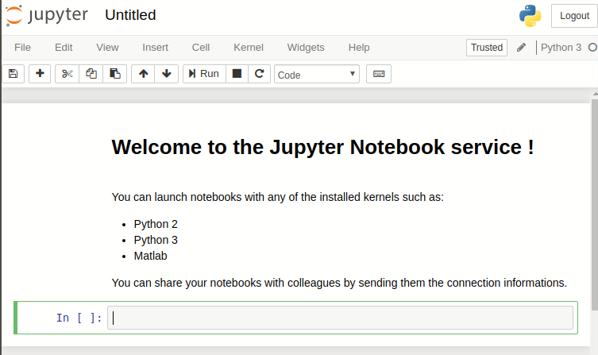

This
page allows to launch a Jupyter Notebook in a Browser Window, with
distant execution. This way, you can access pre-installed
notebooks and data.
INPUT: Jupyter session
OUTPUT
Your email
A browser showing the Notebook.
A Jupyter Python server will be started. Connect to it using the
token sent via email. You can connect/reconnect any-time until its
time-out (specified in the email) has been reached. In the mean
time, you may as well share the connection information to allow your
friends to contribute/see your work.
Availability and Credits
If you use this software, please acknowledge
E. Farhi, Synchrotron Soleil (2019).
Limitations
Remember that the Notebook session is created on request, and
destroyed afterwards. You should then export elsewhere any work
done there-in (e.g. mounted disk, ssh/sftp, DropBox, ownCloud, ...).
This is an experimental service, and as such, it may be restarted
for updates. We shall inform, as much as possible, logged users
about any service interruption.
How it works
A Jupyter server is configured and launched. A message is
sent to your email address with a link and a connection token.